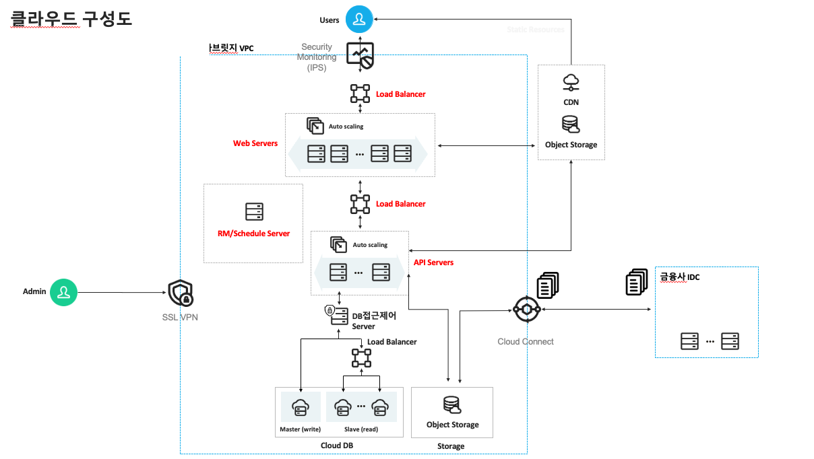
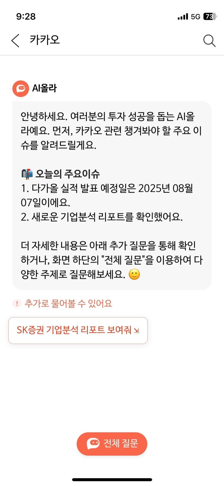
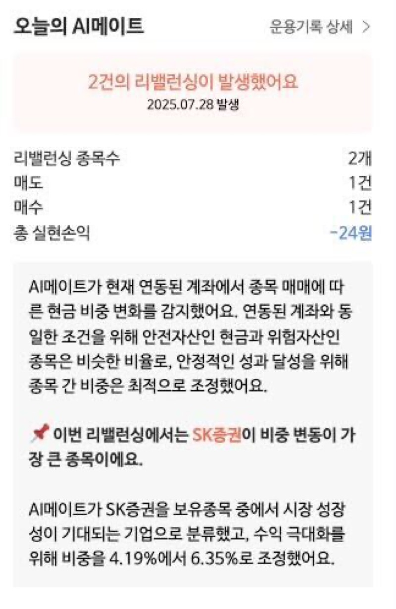

프로젝트 소개
Problem
SK증권 MTS(모바일 트레이딩 시스템)에 AI올라(챗봇)와 AI메이트(초개인화 투자엔진), 두 개의 AI 서비스를 동시에 구축해야 했습니다.
이 프로젝트는 외부로부터 개인정보를 수신하는 첫 번째 케이스였기 때문에, 금융 컴플라이언스 요구사항이 까다로웠습니다. AWS가 아닌 Naver 금융 클라우드를 사용해야 했고, 사내에 레퍼런스가 없는 상태에서 인프라 설계를 시작해야 했습니다.
Solution
약 5개월간 금융 클라우드 위에 백엔드 API, 데이터 파이프라인, 인프라를 직접 구축했습니다. 금융사 IDC와 Cloud Connect로 연결된 환경에서 Auto Scaling 기반 API 서버, Master/Slave DB, Object Storage, CDN을 설계하고, SK증권 개발 담당자와 직접 소통하며 개발과 운영을 병행했습니다.
기간
2024.01 ~ 2024.05 (서비스 출시까지)
팀원 / 역할
4명 — PM(시니어 DE) 1명, 포트폴리오 담당 1명, 프론트엔드 1명, 백엔드/파이프라인 1명(본인)
역할: 백엔드 API 설계/개발, 데이터 파이프라인, 클라우드 인프라 설계/구축, 운영
기술스택
Backend & Pipeline
Storage
Infra
클라우드 아키텍처

금융 컴플라이언스 요구사항으로 인해 Naver 금융 클라우드를 선택했습니다. 개인정보가 오가는 서비스였기 때문에 보안 설계가 핵심이었습니다.
- Security Monitoring (IPS): 유저 트래픽 진입 시 침입 탐지/방지- Web Servers + API Servers: Auto Scaling 기반, Load Balancer로 분산 처리
- Cloud DB: Master(Write) / Slave(Read) 분리 구조
- DB접근제어 Server: 데이터베이스 접근 통제 및 감사 로그
- Cloud Connect: 금융사 IDC와의 전용 네트워크 연결
- SSL VPN: 관리자 접근 보안
개발 과정
도전과제
-
개인정보를 외부에서 수신하는 첫 케이스였기 때문에 사내에 참고할 수 있는 구조가 없었습니다. 네트워크 구간 암호화, DB 접근 제어, IPS 설정 등 보안 요구사항을 Naver 금융 클라우드 문서와 SK증권 담당자와의 소통을 통해 하나씩 풀어나갔고, 인프라 설계를 여러 차례 반복했습니다.
아무것도 없는 상태에서 API 서버, 데이터 파이프라인, 정합성 관리 구조까지 직접 만들었습니다. 입사 후 첫 프로젝트여서 낯선 부분이 많았지만, 한 단계씩 직접 부딪히며 인프라 오케스트레이션 역량을 빠르게 쌓을 수 있었습니다.
-
AI올라에 피딩되는 금융 데이터는 국내 상장 2,700종목의 재무제표와 시장 데이터였습니다. 컴플라이언스 요구사항은 명확했습니다 — 오차율 0.5% 이내, 데이터 신선도 2일 이내.
초기에는 약 40개 파이프라인의 DQ(Data Quality)가 0.8% 수준이었습니다. 0.5%까지 줄이기 위해 재무제표 수집 로직을 정밀하게 다듬고, 대주주 변경, 상장폐지, 액면분할 같은 일 단위 시장 이벤트를 레이턴시 없이 반영할 수 있도록 파이프라인을 고도화했습니다.
가장 어려웠던 건 하루 안에서도 같은 종목에 2회 이상 변동 이벤트가 발생하거나, 기존 공시가 정정되는 케이스였습니다. 단순 일 배치로는 대응이 안 되는 상황이었고, 이벤트 간 순서와 정정 이력을 정확히 추적할 수 있는 파이프라인 구조로 개선해야 했습니다.
이 과정이 프로젝트에서 가장 오래 걸렸고, 가장 많이 배운 부분이었습니다. 데이터 품질은 한 번 맞추면 끝나는 것이 아니라, 변동하는 시장에 맞춰 지속적으로 관리해야 하는 구조적 문제라는 걸 체감했습니다.
-
SK증권 개발 담당자와 직접 소통하며 장애 대응, 데이터 정합성 이슈, 기능 요청 등을 처리했습니다. 기술적 판단을 비기술 직군에게 설명하고 요구사항을 조율하는 과정에서, 소프트 스킬이 프로젝트 속도에 미치는 영향을 체감했습니다.
결과물
서비스 화면


AI올라 — AI 챗봇 | AI메이트 — 초개인화 투자엔진
성과
- AI 챗봇 백엔드 API 및 DataMart 설계/개발, MAU 5만 달성- 개인정보가 아닌 데이터 파이프라인을 Airflow 대신 Cloud Function(서버리스) 기반으로 전환하여 인프라 비용 30% 절감
(외부 서버 → 금융 클라우드 DMZ → Object Storage → Hook → Cloud Function)
데이터 엔지니어로서 성장한 지점
데이터 정합성은 "맞추는 것"이 아니라 "지키는 구조"를 만드는 것
2,700종목의 재무제표를 0.5% 이내로 맞추는 과정에서 깨달은 건, 정합성은 한 번 맞추면 끝나는 것이 아니라는 점이었습니다. 시장은 매일 변하고, 하루에도 같은 종목에 여러 번 이벤트가 발생합니다. 결국 중요한 건 "지금 데이터가 맞는가"가 아니라, "데이터가 계속 맞을 수 있는 구조인가"였습니다.
이 경험이 이후 데이터 품질(DQ) 파이프라인과 모니터링 체계에 깊이 관심을 갖게 된 출발점이 됐습니다.
파이프라인은 코드가 아니라 인프라 위에서 흐른다
파이프라인 코드를 아무리 잘 짜도, 그 위의 인프라가 불안하면 데이터는 흐르지 않습니다. 금융 클라우드 인프라를 직접 설계하고, 네트워크 · 보안 · 스토리지 · 오토스케일링을 하나의 구조로 엮는 경험을 하면서 — 파이프라인 엔지니어링과 인프라 오케스트레이션이 분리된 것이 아니라 하나의 문제라는 걸 체감했습니다.
인프라를 설계한 사람이 파이프라인을 짜니까, 각 레이어 간의 의존성과 병목이 자연스럽게 보이기 시작했습니다. 이 감각이 이후 프로젝트에서 아키텍처를 판단하는 기준이 됐습니다.
금융사와 직접 소통하며 얻은 소프트 스킬
기술적 판단을 비기술 직군에게 전달하고, 요구사항을 조율하고, 장애 상황에서 빠르게 대응하는 과정을 반복하면서 — 커뮤니케이션이 프로젝트 속도를 좌우한다는 걸 느꼈습니다. 입사 후 첫 프로젝트였기에 모든 것이 처음이었지만, 그만큼 엔지니어로서 기술 외적인 역량이 크게 성장한 시기였습니다.
아쉬운점
코드 품질보다 속도를 우선할 수밖에 없었습니다
입사 후 첫 프로젝트였고, 일정과 범위를 고려하면 멋진 코드를 쓸 여유가 없었습니다. 동작하는 코드를 빠르게 만들고 운영에 올리는 것이 우선이었고, 그 과정에서 기술 부채가 쌓인 부분이 있습니다.
지속 가능한 개발 방식
높은 밀도로 집중한 5개월이었고, 결과적으로 프로젝트는 성공했지만 같은 방식을 반복할 수는 없다는 걸 느꼈습니다. 첫 프로젝트였기에 열정으로 밀어붙일 수 있었지만, 이후로는 자동화와 구조적 설계에 더 투자하여 사람에 의존하지 않는 시스템을 만드는 데 집중하고 있습니다.